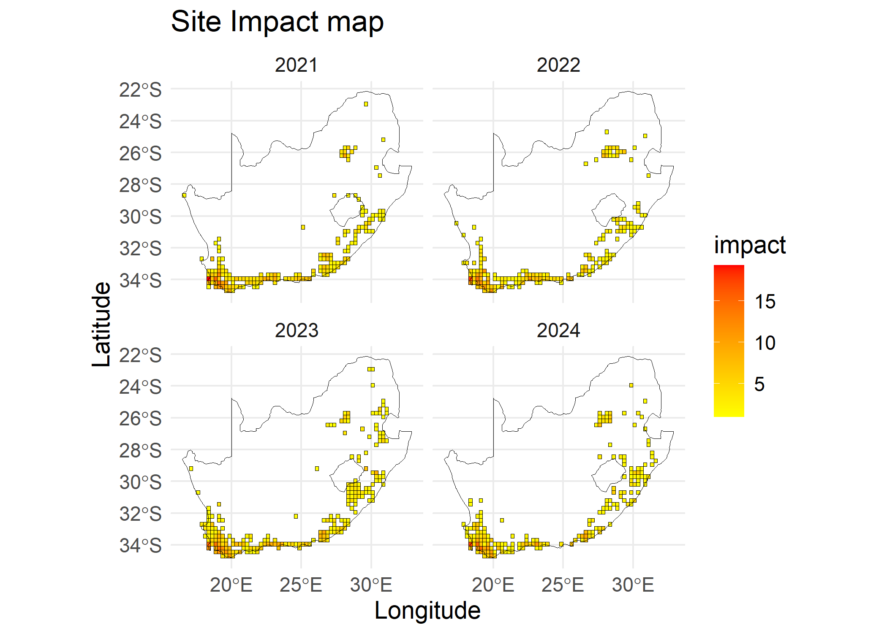

The goal of impIndicator is to allow users to seamlessly calculate and visualise the impact of alien taxa and individual species in a given area. It calculates and visualises impact per site as a map. It takes in GBIF occurrence data and EICAT assessment data. It enables users to choose from various methods of calculating impact indicators based on different studies.
The impIndicator produces three main products and can be useful as stated below:
- impact indicator <impact_indicator()>
The impact indicator offers a nuanced representation of the trends of biological invasions of an area (local, regional, or global scales). By tracking the increase and decrease of ecological threats over time, this product provides insights into the dynamics of invasive alien species impacts, helping assess whether current management practices are effective or need adjustment. The temporal analysis of impact indicator enables targeted resource allocation, fostering proactive interventions to mitigate biodiversity loss and ecosystem degradation.
- site impact <site_indicator()
The site impact as a map serves as a visual and analytical tool to represent the intensity of biological invasions across different parts of an area. By enabling spatial comparisons—such as between provinces, states, or conservation areas—it highlights hotspots and areas at risk of invasion impact. This spatial data is useful for prioritising management actions, coordinating restoration projects, and fostering cross-regional collaboration to address invasive species impacts effectively.
- species impact <species_impact()
The species impact produces the trends of individual invasive alien species, enabling a species-specific impact caused by invasions. This data supports comparisons of individual species’ impacts, revealing their roles and interactions within invaded area. The species impact is invaluable for prioritising species-specific management efforts, informing eradication strategies, and advancing research on alien species’ ecological roles and adaptation patterns.
Installation
You can install the development version of impIndicator from GitHub with:
# install.packages("remotes")
remotes::install_github("b-cubed-eu/impIndicator")Demonstration
This Markdown demonstrates the computation and visualisation of impact indicator of biological invasions using the impact_indicator() to compute impact indicator of alien taxa, the species_impact() to compute impact indicator per species, and the site_impact() to compute impact indicator per site. The functions feeds in species GBIF occurrence cube from the b3gbi::process_cube() using taxa_cube() and
Environmental Impact Classification of Alien Taxa (EICAT) impact score of species. Read about the background of the products at https://b-cubed-eu.github.io/impIndicator/articles/Background.html
Process occurrence cube
The Global Biodiversity Information Facility (GBIF) occurrence data is a standardised species information that documents the presence or absence of species at particular locations and times.
# Process cube from GBIF occurrence data in the R studio environment
acacia_cube <- taxa_cube(
taxa = taxa_Acacia,
region = southAfrica_sf,
res = 0.25,
first_year = 2010
)
acacia_cube
#>
#> Simulated data cube for calculating biodiversity indicators
#>
#> Date Range: 2010 - 2024
#> Number of cells: 402
#> Grid reference system: custom
#> Coordinate range:
#> [1] 16.60833
#>
#> Total number of observations: 6508
#> Number of species represented: 29
#> Number of families represented: Data not present
#>
#> Kingdoms represented: Data not present
#>
#> First 10 rows of data (use n = to show more):
#>
#> # A tibble: 6,508 × 8
#> scientificName taxonKey minCoordinateUncerta…¹ year cellCode xcoord ycoord
#> <chr> <dbl> <dbl> <dbl> <chr> <dbl> <dbl>
#> 1 Acacia mearnsii 2979775 8 2010 1376 30.4 -29.7
#> 2 Acacia saligna 2978552 1 2010 206 18.4 -33.9
#> 3 Acacia implexa 2979232 1 2010 206 18.4 -33.9
#> 4 Acacia pycnantha 2978604 1 2010 206 18.4 -33.9
#> 5 Acacia cyclops 2980425 122 2010 668 18.4 -32.2
#> 6 Acacia mearnsii 2979775 1 2010 215 20.6 -33.9
#> 7 Acacia mearnsii 2979775 110 2010 215 20.6 -33.9
#> 8 Acacia saligna 2978552 1 2011 206 18.4 -33.9
#> 9 Acacia saligna 2978552 1 2011 144 19.4 -34.2
#> 10 Acacia melanoxy… 2979000 1 2011 206 18.4 -33.9
#> # ℹ 6,498 more rows
#> # ℹ abbreviated name: ¹minCoordinateUncertaintyInMeters
#> # ℹ 1 more variable: obs <dbl>EICAT assessment data
The Environmental Impact Classification for Alien Taxa (EICAT) assessment data is the reported impact of alien taxa based on EICAT method which is the IUCN standard. An assessed alien taxa with adequate data is classified into massive (MV), major (MR), moderate (MO), minor (MN), or minimal concern (MC) depending on the severity of the impact caused on recipient ecosystem. Additional information such as the mechanisms and location of impact are also recorded. An example of an EICAT data is:
# view EICAT data
head(eicat_acacia,10)
#> # A tibble: 10 × 3
#> scientific_name impact_category impact_mechanism
#> <chr> <chr> <chr>
#> 1 Acacia saligna MC (1) Competition
#> 2 Acacia saligna MC (12) Indirect impacts through interaction …
#> 3 Acacia saligna MC (1) Competition
#> 4 Acacia saligna MC (1) Competition; (9) Chemical impact on th…
#> 5 Acacia mearnsii MC (6) Poisoning/toxicity
#> 6 Acacia longifolia MC (9) Chemical impact on ecosystems
#> 7 Acacia dealbata MC (9) Chemical impact on ecosystems
#> 8 Acacia dealbata MC (9) Chemical impact on ecosystems
#> 9 Acacia saligna MC (9) Chemical impact on ecosystems
#> 10 Acacia dealbata MC (12) Indirect impacts through interaction …Compute impact map
The impact risk map shows the impact score for each site, where multiple species can be present. To compute the impact risk per site, aggregated scores across species at each site are needed. The site_impact() uses max, sum and mean metrics to aggregate impact scores across species as proposed by Boulesnane-Guengant et al., (in preparation). The combinations of within species aggregation metrics for each species and across species for each site leads to five type of indicators, namely, precautionary, precautionary cumulative, mean, mean cumulative and cumulative.
siteImpact <- site_impact(
cube = acacia_cube,
impact_data = eicat_acacia,
trans = 1,
type = "mean cumulative"
)
# impact map
# visualize last four years for readability
plot(x = siteImpact, region = southAfrica_sf, first_year = 2021)
Compute impact indicators
To compute the impact indicator of alien taxa, we sum all the yearly impact scores of each site of the study region. To correct for sampling effort we divide the yearly impact scores by number of sites in the study region with at least a single occurrence throughout the whole year.
# impact indicator
impactIndicator <- impact_indicator(
cube = acacia_cube,
impact_data = eicat_acacia,
trans = 1,
type = "mean cumulative"
)
# visualise impact indicator
plot(impactIndicator)
Impact indicator per species
We compute the impact indicator per species by summing the impact risk map per species and correct for sampling effort by dividing by .
# impact indicator per species
species_value <- species_impact(
cube = acacia_cube,
impact_data = eicat_acacia,
trans = 1,
type = "mean"
)
# visualise species impact
plot(species_value)
#> Warning: Removed 9 rows containing missing values or values outside the scale range
#> (`geom_line()`).
Comparing type of indicators
To compare type of impact indicators for a case study, we provide a plot which can be adapted by a user to compare a set of method.
# plot all type of impact indicators
types <- c(
"precautionary",
"precautionary cumulative",
"mean",
"mean cumulative",
"cumulative"
)
all_impact <- data.frame("year" = unique(acacia_cube$data$year))
for (type in types) {
impact_value <- impact_indicator(
cube = acacia_cube,
impact_data = eicat_acacia,
trans = 1,
type = type
)
all_impact[type] <- impact_value$value
}
#plot the trend
all_impact %>%
gather(-year, key = "indicator_type", value = "impact_score") %>%
ggplot(aes(x = year, y = impact_score)) +
geom_line(aes(color = indicator_type), linewidth = 1.5) +
theme_minimal() +
labs(
title = "Type of indicators",
y = "impact score"
) +
theme(text = element_text(size = 14))